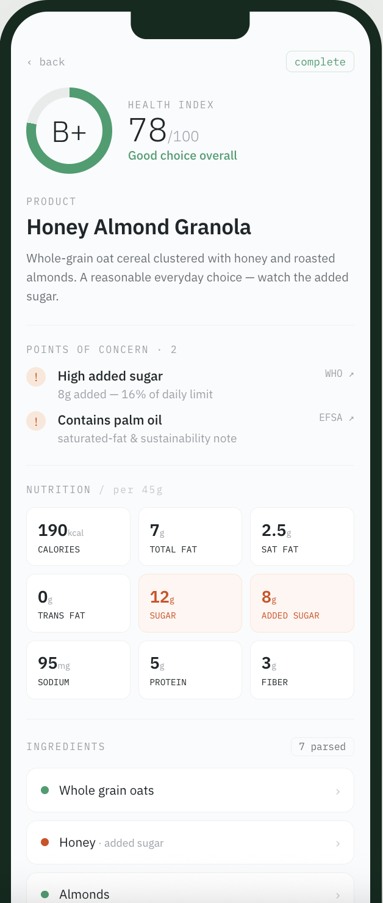

ROLE
Product Designer • End-to-end
Open to new roles
2026
CASE STUDY 01 — AGENTIC EXPERIENCE
A multi-agent AI that turns any food label into a verifiable health verdict in seconds - every claim traced back to a real regulatory source.
项目HTML/video
稍后放
THE PRODUCT
Three specialist agents read the label, cross-check every additive against FDA · EFSA · WHO, and return a score you can actually open up and verify.

THE CHALLENGE
The information to eat well is printed on every package - dense, coded in E-numbers, unjudgeable in the three seconds you have in the aisle.
01
Unreadable by design
A label lists 20+ additives under names no shopper recognizes. The facts are there; the meaning isn't.
02
Health apps you can't trust
Existing scanners hand out scores with no sourcing — an AI verdict is worthless if you can't check where it came from.
03
One model isn't enough
Reading a photo, checking regulations and scoring are three different jobs. One prompt doing all three is where accuracy breaks.
THE SYSTEM
I split the problem into three specialists — each with a single job, each passing clean structured output to the next. The interface makes that hand-off visible, so users watch the reasoning happen instead of waiting on a spinner.
A photographed ingredient label
messy · angled · low-light · real-world
VISION EXTRACTION
Read the shelf, not just the pixels.
Turns a messy photo into a clean data object — product, serving, nutrition and every ingredient. Corner brackets and a live sweep make the capture feel precise, not like a black box.
CROSS-REFERENCE
Check every additive against the real record.
Matches each ingredient against FDA, EFSA and WHO records — pulling the actual source documents, not guesses. Streaming the hand-off as a timeline makes a 14-second wait read as diligence.
SCORE & CITE
A verdict you can open up.
Computes a 0–100 Health Index and grade, then attaches a citation to every concern. Praise (gold) and concern (clay) are colour-separated, so the verdict is scannable and every claim is one tap from its source.
A cited health verdict - headline grade, flagged concerns, and a source behind every one.
THE DECISION THAT DEFINED IT
The first prototype showed a clean grade and hid the evidence one tap away. In testing, people didn't trust it — an AI number with no visible source is just an opinion. So I inverted the hierarchy: the reasoning became the product, and the score its headline.
HOW IT WAS BUILT
Designing an agentic product with an agentic workflow - from architecture to a live, coded prototype, without leaving the loop.
01
Agent-first blueprinting
Mapped the three agents, their I/O and the hand-off UI before a single screen - architecture drove layout.
02
Prompt-driven prototyping
Turned design intent into a working front-end with real components and live pipeline states, not static mocks.
03
Faster iteration loops
Pressure-tested edge cases - a <60 score, zero concerns, a failed scan - in the browser, collapsing weeks into days.
The best design decision wasn't the score. It was making the machine show its work.
Impact
Reframed a generic "health scanner" into a trustworthy, cited system - a three-agent pipeline where a verdict arrives with its evidence attached, in ~14 seconds.
Process
Owned it end-to-end - brand, product design, agentic UX and a coded, interactive prototype - designing an AI product with an AI-native workflow.
What I learned
With AI features, transparency is the interface. Designing the visible reasoning mattered more than styling the final answer.
NEXT PROJECT
AI GRANT COPILOT
→